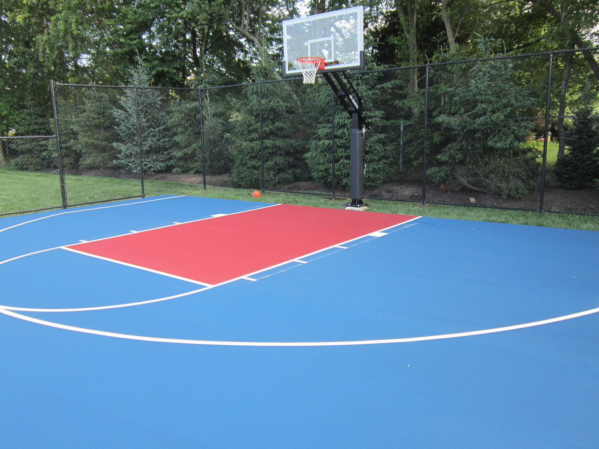

Локации
Нет друзей :) ? Или просто нет с кем сыграть? Держи адресса лучших баскетбольных локаций. Ни разу не видел, что на этих площадках никто не играл в любое время (даже зимой). Нажми и иди играй !
Регистрация
Сейчас лучшее, что Вы сможете сделать, это просто зарегистрироватся в нашем проекте. Так легче будет оценить нужность этого дела. Тыкай и регистрируйся. Будь лапочкой.